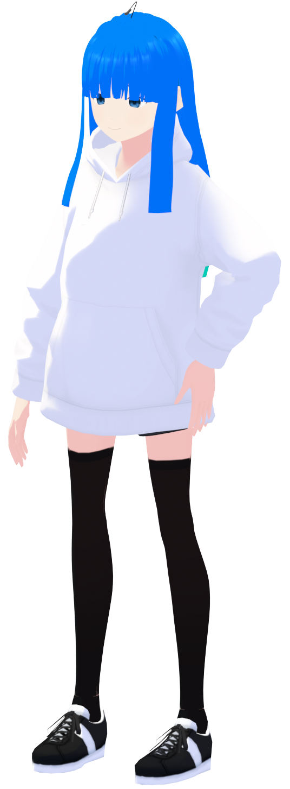

ふらめんFuramen2008.02.06 -xx才 ｜ ♂ ｜ JP 愛知県出身 / 愛知県在住 (一応)KokkoSoft サブリーダー Image color
|
 |
2019年ごろ、Switch新しいユーザー名を考えてたところ、ふと"ふらふらめんたいこ"という名前が思い浮かび、そのまま決定した。つまり特に意味はないってわけ。
当時、他の候補に"みそしる"とかがあったようななかったような...
2025年、名前が長すぎたので略称の"ふらめん"を正式名称に変更。
現在はノート(外出)メイン機として使用中
| CPU | intel core i7 8705G |
| RAM | 16GB |
| SSD | 512GB |
| GPU | RADEON RX VEGA M |
| intel HD graphics 630 | |
| モニター | 4K(ゲームとかが重くなるため1080pに設定して使用) |
| 1280x1024 | |
| OS | Windows10 Pro |
| type | 2in1ノート |
| 機種 | HP SPECTRE x360 15(型番忘れたけど2018年くらいのモデル) |
| 使用用途 | 外出用 |
| CPU | intel core i5 12600KF |
| RAM | DDR4 2666MHz 32GB(8GBx4 / Kingston FURY Beast) |
| SSD | M.2 NVMe 500GB(Crucial P2) |
| M.2 NVMe 1TB(Crucial P3) | |
| HDD | 1TB |
| 500GB(Ubuntu用) | |
| 4TB | |
| 4TB(RAID1用) | |
| GPU | NVIDIA GeForve GTX1650 |
| モニター | 1680x1050 |
| 1280x1024 | |
| OS | Windows11 Home |
| Ubuntu 24.04 LTS | |
| マウス | Logicool MX Master 3S |
| キーボード | Logicool K835TKL(白/赤軸) |
| マウス | Logicool MX Master 3S(グラファイト) |
| スピーカー | Creative Pebble V2 |
| 拡張ボード | IEEE1394b x3(CIF-FW8P32) |
| type | デスクトップ |
| 用途 | メイン機、動画編集、ゲーム、プログラミング、ネットetc... |
ver.1.0は初代メインPC
4TBHDDx2を増設 RAID1でバックアップを取りながら4TBHDDとして運用
マウスをLogicool M546からLogicool MX Master 3Sに変更
IEEE1394b端子を増設
Ubuntu 24.04 LTSとのデュアルブートを開始
Ubuntu用にHDD500GBを増設 SSD起動の速さに感動した
スピーカーをELECOM MS-P08UECBKからCreative Pebble V2に変更
メモリを16GB(8GBx2)から32GB(8GBx4)に増設
M.2 NVMe 1TBを増設
キーボードをハードオフ産中華ゲーミングキーボードからLogicool K835に変更
とりあえず完成
こやつらはカメラとしての役目も兼ねているぞ！
| 機種名 | iPhone5s |
| 容量 | 16GB |
| カラー | スペースグレイ |
| 機種名 | iPhone12mini |
| 容量 | 128GB |
| カラー | ホワイト |
| 機種名 | Xperia Ace |
| 容量 | 64GB |
| カラー | ブラック |
| 機種名 | Lumix GH6 |
| 解像度(写真) | 25MP(ハイレゾショットで100MP) |
| 解像度(動画) | 5.8K30 / 5.7K60 / 4K120 / 1080p300 |
| よく使う解像度(動画) | 4K120 / 4K60 / 1080p300 / 1080p240 / 1080p60 |
| シャッタースピード | バルブ(最大30分) / 60秒-1/8000秒 |
| バルブ(最大60秒) / 60秒-1/32000秒(電子シャッター) | |
| ISO感度(写真) | 50 / 100-25600 |
| ISO感度(動画) | 50 / 100-12800 |
| 用途 | 動画 / 広角担当 |
LEICA DG VARIO-ELMARIT 12-60mm
| 焦点距離 | 12-60mm(35mm換算：24-120mm) |
| F値 | F2.8-4.0 |
| 用途 | いつものレンズ |
| 機種名 | Canon EOS Kiss X6i |
| 解像度(写真) | 18MP |
| 解像度(動画) | 1080p30 / 720p60 / 480p30 |
| よく使う解像度(動画) | 1080p30 / 720p60 |
| シャッタースピード | バルブ / 30秒-1/4000秒 |
| ISO感度(写真) | 100-12800 / 25600 |
| ISO感度(動画) | 100-6400 / 12800 |
| 用途 | 写真 / 望遠担当 |
EF-S 24mm F2.8 STM
| 焦点距離 | 24mm(35mm換算：36mm) |
| F値 | F2.8 |
| 用途 | 近距離撮影用 |
EF-S 55-250mm F4-5.6 IS
| 焦点距離 | 55-250mm(35mm換算：82.5-375mm) |
| F値 | F4.0-5.6 |
| 用途 | 遠距離撮影用 |
| 機種名 | GoPro HERO7 Black |
| 解像度(写真) | 12MP |
| 解像度(動画) | 4K60 / 1080p240 / 720p240 |
| よく使う解像度(動画) | 4K60 / 1080p240 / 1080p60 |
| 焦点距離 | 3mm(35mm換算：15mm) |
| F値 | F2.8? |
| シャッタースピード | 1/125秒-1/2000秒 |
| ISO感度 | 100-3200 |
| 用途 | 外出用、普通のカメラだと壊れるような撮影用、4K撮影用、メインカメラ |
| 機種名 | GoPro HERO5 Black |
| 解像度(写真) | 12MP |
| 解像度(動画) | 4K30 / 1080p120 / 720p240 / 480p240 |
| よく使う解像度(動画) | 4K30 / 1080p120 / 1080p60 / 720p60 |
| 焦点距離 | 3mm(35mm換算：15mm) |
| F値 | F2.8? |
| シャッタースピード | 不明 |
| ISO感度 | 不明 |
| 用途 | 外出用、普通のカメラだと壊れるような撮影用、4K撮影用、メインカメラ |
| 機種名 | SONY HVR-Z1J |
| 解像度(写真) | なし |
| 解像度(動画) | 1080i60 / 480i60 |
| よく使う解像度(動画) | 1080i60 |
| 焦点距離 | 4.5-54mm(35mm換算：32.5-390mm) |
| F値 | F1.6-2.8 |
| シャッタースピード | 1/4秒-1/10000 |
| ISO感度 | 0-18db |
| 用途 | 謎 |